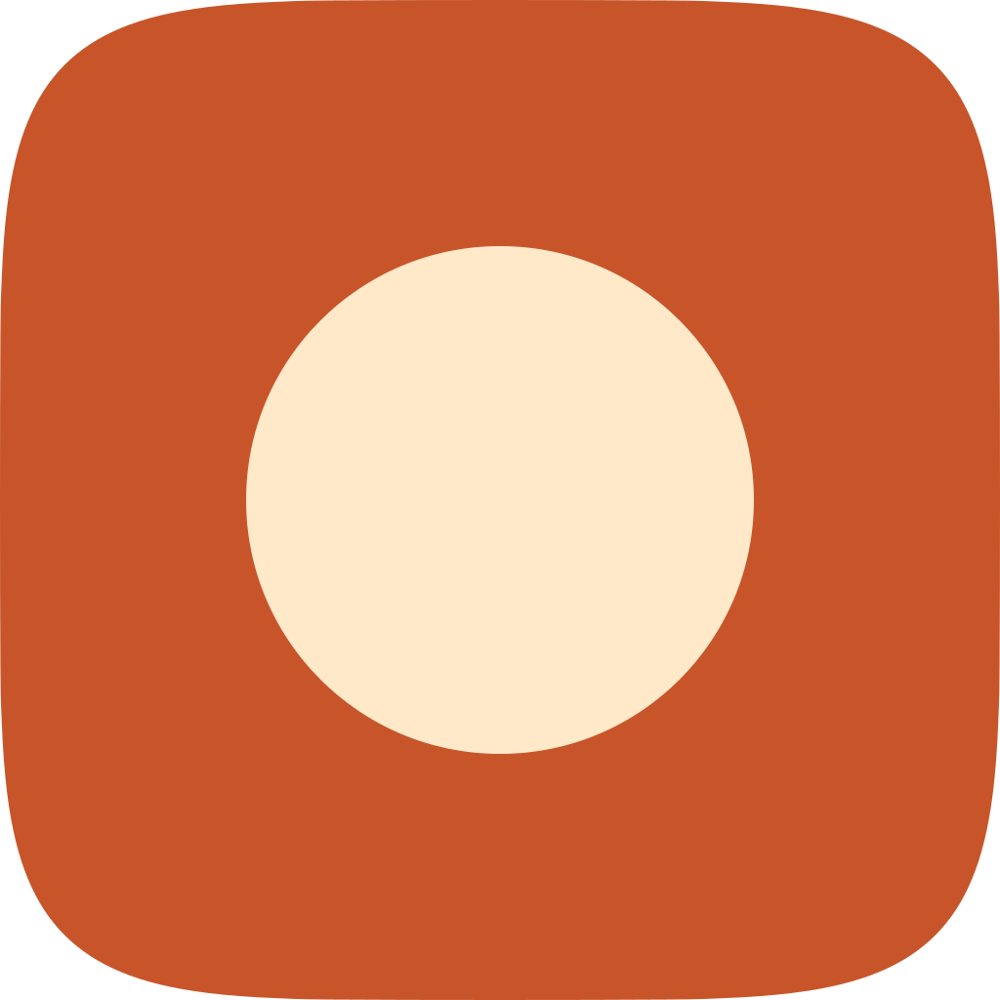
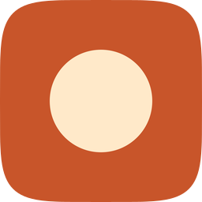

Direction "Porcelain Instrument" · one shared spec, three engines per the mac-design-studio pipeline · every take audited on real renders at 1024 / 128 / 64 / 48 / 32 / 16.
Icon variation takes with renders, rubric scores and verdicts
Take
Hero at 1024, then renders at 128 / 64 / 48 / 32 / 16 css px (2× retina sources), plus the 16px squint magnified
Ground cushion reads at 48px; frosted plate holds figure-ground 4.2:1.
c · icon-c.pngraster take

hero 1024

1286448321616 ×6
6 / 12
Lost on #10: flat pre-masked raster, identity dies under Tinted.
Recommendation: ship master (icon.svg). Checks 1-4 pass on real renders; material sampled from apple-23 and apple-28. Known liabilities to revisit: The highlight bar clips at 16px; the plate's lower edge wants 1px more separation.
Rubric: the 12-point icon audit from icon-directions.md (mask discipline, grid, silhouette, 16px identity, single light model, palette discipline, figure-ground, depth coherence, focal sizing, variant robustness, texture restraint, era fit) — checks 1–4 non-negotiable, delivery bar ≥10/12. Raster takes audited on their squircle-masked 1024 versions. Renders produced by `python3 ../scripts/audit_sheet.py render ` (1024 / 256 / 128 / 96 / 64 / 32 sources); verified by its `check` subcommand.